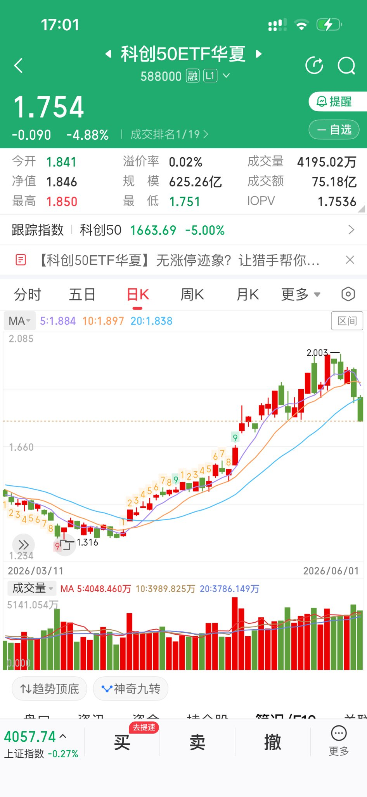

科创板需要真正的一哥 DeepSeek
目前一哥中芯国际利润还很弱
预计到 2030 年
都达不到茅台的净利润
但股价高点时已经很接近茅台市值了
散户买不到 DeepSeek 上市前的份额
但指数基金估计也会参考 spaceX
在 ds 上市后最快速纳入指数
预计在 2028 年 DeepSeek 登录科创板
DeepSeek 的目标是十万亿人民币
科创板 50ETF 还是很有潜力的
中芯在华为的新的路线图韬定律指引下
未来 10 年有机会大跳跃
但是5 年内年净利润很难破 300 亿人民币
2032 年前后有机会破 1000 亿人民币
超越茅台的净利润水平
那时候科创板变成实至名归中国纳斯达克
50etf 如果跌到 1.5 准备抄底买回来
目标 5 年 3 倍
10 年 10-15 倍
